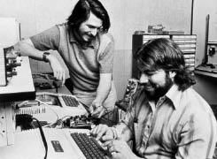

Tuhaf Çift
İki Steve

Jobs’la Wozniak garajda, 1976
Woz
Jobs, McCollum’un sınıfında öğrenciyken, öğretmenin gelmiş geçmiş en gözde öğrencisi olan, sınıftaki başarısıyla okulda efsane haline gelmiş bir mezunla arkadaş oldu. Kardeşi bir ara Jobs’la aynı yüzme takımında olan Stephen Wozniak, Jobs’tan neredeyse beş yaş büyüktü ve elektronik konusunda çok daha bilgiliydi. Ama duygusal ve sosyal açıdan hâlâ teknoloji düşkünü bir lise öğrencisi gibiydi.
Jobs gibi Wozniak da babasından çok şey öğrenmişti. Ama öğrendikleri birbirinden farklıydı. Paul Jobs liseden terkti ve araba tamirciliği yaparken, parçaları ucuza alıp pahalıya satarak kâr etmeyi öğrenmişti. Jerry adıyla bilinen Francis Wozniak ise Cal Tech mezunu parlak bir mühendisti; okulun Amerikan futbolu takımında oyun kuruculuk yapmıştı, mühendisliği yüceltir ve ticaretle, pazarlamayla ve satışla uğraşanları horgörürdü. Lockheed’in füze güdüm sistemleri programında roket bilimci olmuştu. “Bana mühendisliğin dünyada ulaşılabilecek en önemli şey olduğunu söylediğini hatırlıyorum,” diye anımsıyordu Steve Wozniak sonradan. “Toplumu yeni bir seviyeye taşıdığını söylemişti.”
Wozniak’ın ilk anılarından biri, bir hafta sonu babasının işyerine gitmesi ve orada kendisine elektronik parçalar gösterilmesiydi: “Babam onları oynayayım diye masaya koydu.” Babasının devre tasarımlarından birinin düzgün çalıştığını göstermek için video ekranındaki bir dalga çizgisinin düzleşmesini sağlamaya çalışmasını büyülenmişçesine seyretmişti. “Babamın yaptığı şeyin önemli ve iyi olduğunu anlamıştım.” Woz (o zamanlar bile ona bu isimle hitap ediliyordu) evde ortalıkta duran rezistörlerle transistörler hakkında sorular sorunca babası bir karatahta getirip bunların neler yaptığını anlatıyordu. “Rezistörün ne olduğunu açıklamaya atomlardan ve elektronlardan başlıyordu. Ben ikinci sınıftayken, rezistörlerin işleyişini denklemlerle değil hayalimde canlandırmamı sağlayarak açıkladı.”
Woz’un babası onun çocuksu, asosyal kişiliğine damgasını vuran bir şey daha öğretti: Asla yalan söylememeyi. “Babam dürüstlüğe inanırdı. Tamamen dürüstlüğe. Bana öğrettiği en önemli şey buydu. Şimdi bile asla yalan söylemem.” (Bunun tek istisnası iyi eşek şakaları yaptığı zamanlardı.) Ayrıca oğluna fazla hırslı olmamayı öğretmişti, ki Woz bu açıdan Jobs’tan farklıydı. Tanışmalarından kırk yıl sonra, 2010’da Woz bir Apple yeni ürün lansmanı sırasında aralarındaki farklara değindi. “Babam bana hep ortada ol,” derdi. “Steve’in tersine yukarıda, mühim şahsiyetlerin arasında olmak istemiyordum. Babam mühendisti, ben de mühendis olmak istiyordum. Steve gibi iş hayatında lider olamayacak kadar çekingendim.”
Wozniak dördüncü sınıfa geldiğinde kendi deyişiyle “elektronik çocuklardan” biri olmuştu. Transistörlerin yanındayken kızların yanında olduğundan daha rahattı, ayrıca zamanının çoğunu devre kartlarının başında iki büklüm geçiren biri olarak kilo aldı ve kamburu çıktı. Jobs babasının açıklayamadığı bir karbon mikrofona kafa yorarken Wozniak mahalledeki altı evin çocuk odaları arasında amplifikatörlü, röleli, lambalı ve zilli bir interkom sistemi kurmak için transistörler kullanıyordu. Ve Jobs’ın Heath setleriyle uğraştığı yaşta Wozniak o zamanların en gelişkin telsizleri olan Hallicrafters’lardan faydalanarak bir alıcı-verici yapıyor ve babasıyla birlikte amatör telsizci lisansı alıyordu.
Woz zamanının çoğunu evde oturup babasının elektronik dergilerini okuyarak geçiriyordu ve yeni bilgisayarlarla, örneğin güçlü ENIAC’la ilgili haberlere bayılıyordu. Boole cebirine yatkınlığı olduğundan, bunların karmaşıklığına değil basitliğine şaşırıyordu. 8. sınıftayken ikili sayı kuramını kullanarak yüz transistör, iki yüz diyot, iki yüz rezistör ve on devre kartı içeren bir hesap makinesi yaptı. Bununla Hava Kuvvetleri’nin düzenlediği bir yerel yarışmada birincilik kazandı, oysa katılanlar arasında 12. sınıf öğrencileri bile vardı.
Woz, yaşıtları kızlarla çıkarken ve parti yaparken giderek içine kapandı; öyle uğraşları devreler tasarlamaktan çok daha karmaşık buluyordu. “Önceden popülerken, bisiklete filan binerken birden asosyal oluverdim,” diye anımsıyordu. “Çok uzun süredir kimse benimle konuşmuyor gibiydi.” Stres atmak için çocukça eşek şakaları yapmaya başladı. 12. sınıftayken bir elektronik metronom –hani şu müzik derslerinde tık tık tık diye zaman ölçen aletler– yaptı ve bomba sesine benzer bir ses çıkardığını fark etti. Bunun üzerine birkaç büyük bataryanın etiketlerini söktü, metronomu bataryalara bağladı ve okuldaki kilitli dolaplardan birine koydu. Metronomu dolap açılınca daha hızlı çalışacak şekilde ayarladı. O gün daha sonra müdürün odasına çağrıldı. Okulun matematik yarışmasını yine kazandığı için çağrıldığını sandı. Oysa karşısında polisi buldu. Cihaz keşfedilince çağrılan müdür Bay Bryld, onu cesurca kapıp göğsüne bastırarak futbol sahasına koşmuş ve orada telleri koparmıştı. Woz gülmemeye çalıştıysa da beceremedi. O geceyi ıslahevinde geçirdi. Woz için unutulmaz bir deneyimdi bu. Diğer tutuklulara tavan vantilatörlerine uzanan kabloları alıp parmaklıklara bağlamayı ve böylece parmaklıklara dokunan insanlara elektrik çarpmasını sağlamayı öğretti.
Woz elektrik çarpmasını onur verici buluyordu. Donanım mühendisi olmakla gurur duyuyordu ve arada sırada elektrik çarpması onun için normaldi. Bir keresinde yaptığı bir rulet masasında dört kişi başparmaklarını bir slota sokuyorlardı; top düşünce bir tanesi elektrik akımına kapılıyordu. “Donanımcılar bu oyunu oynayabilirler, ama yazılımcılar korkar,” dedi.
Lisedeki ikinci senesinde Sylvania’da yarım gün çalışmaya başladı ve ilk kez bir bilgisayarın üstünde çalışma fırsatı buldu. Bir kitaptan FORTRAN öğrendi ve dönemin bütün bilgisayar sistemlerinin kullanım kılavuzlarını okudu, Digital Equipment PDP-8’ten başlayarak. Sonra en yeni mikroçiplerin özelliklerini inceledi ve bu yeni parçaları kullanarak bilgisayarları baştan tasarlamaya çalıştı. Tasarımı olabildiğince az öğe kullanarak kopyalamak istiyordu. “Bunu kapıları kapatıp odamda tek başıma yaptım,” diye anımsıyor. Her gece, bir önceki geceki çizimini geliştirmeye çalışıyordu. Lisedeki ikinci senesinin sonunda artık bir ustaydı. “Artık şirketlerin tasarımlarındaki çiplerin yarısını kullanarak bilgisayarlar tasarlıyordum, ama sadece kâğıt üstünde.” Bunu arkadaşlarına asla söylemedi. Sonuçta 17 yaşındaki gençlerin çoğu başka şekillerde eğleniyorlardı.
Wozniak lisedeki ikinci senesinin Şükran Günü’nde Colorado Üniversitesi’ne gitti. Üniversite tatil sebebiyle kapalıydı, ama Wozniak kendisine laboratuvarları gezdirecek bir mühendislik öğrencisi buldu. Wozniak babasına orada okumasına izin vermesi için yalvardı, oysa o üniversite bütçelerini zorlayacak kadar pahalıydı. Bir anlaşma yaptılar: Wozniak orada bir sene okuyacaktı, ama sonra geri dönüp öğrenimine De Anza yüksekokulunda devam edecekti. Wozniak sonunda pazarlığa uymak zorunda kaldı. 1969 sonbaharında Colorado’ya gittikten sonra öyle çok eşek şakası yaptı ki (örneğin yazıcıdan yüzlerce sayfalık “Nixon’ı siktir et” çıktısı alıyordu) iki dersten kaldı ve deneme süresine alındı. Ayrıca Fibonacci sayılarını hesaplayan bir program yazmak için bilgisayarları öyle çok kullandı ki üniversite onu giderleri ödetmekle tehdit etti. Bunları ebeveynine söylemek yerine De Anza’ya geçti.
Wozniak De Anza’da keyifli bir sene geçirdikten sonra biraz para kazanmaya karar verdi. Motorlu Taşıtlar İdaresi’ne bilgisayar üreten bir şirkette iş buldu ve bir iş arkadaşı ona muhteşem bir teklif yaptı: Arkadaşı ona yedek çiplerden verecekti, kâğıt üstünde tasarladığı bilgisayarlardan birini yapabilsin diye. Wozniak olabildiğince az çip kullanmaya karar verdi, hem bunu kişisel bir sınama olarak gördüğünden, hem de iş arkadaşının cömertliğini suistimal etmemek adına.
İşin çoğunu hâlâ Homestead Lisesi’nde okuyan, köşenin hemen ardında oturan Bill Fernandez adlı bir arkadaşının garajında halletti. Çalışırken bol bol Cragmont Kremalı Gazoz içiyor, şişeleri iade etmek için bisikletle Sunnyvale’deki Safeway süpermarketine gidiyor ve depozitoyla daha fazla gazoz alıyorlardı. “Bilgisayara Kremalı Gazoz Bilgisayarı demeye başladık,” diyor Wozniak. Bu bilgisayar temelde, bir dizi tuşla girilen numaraları çarpabilen ve sonuçları ikilik sistemde düzenlenmiş küçük ışıklarla sergileyen bir hesap makinesiydi.
1970 sonbaharında bilgisayar tamamlanınca Fernandez, Wozniak’a Homestead Lisesi’nde tanışması gereken biri olduğunu söyledi. “Adı Steve. Senin gibi o da eşek şakası yapmayı seviyor ve elektronik cihazlar yapmaya meraklı.” 32 yıl önce Hewlett’ın Packard’ın garajına girmesinden beri yapılan en önemli Silikon Vadisi garaj toplantısı olabilir bu. “Steve’le ben Bill’in evinin önündeki kaldırıma oturup uzun uzun konuştuk –eşek şakalarımızdan bol bol bahsettik, bir de yaptığımız elektronik cihaz tasarımlarından,” diye anımsıyordu Wozniak. “Öyle çok ortak yönümüz vardı ki. Normalde insanlara üstünde çalıştığım tasarımları anlatmam zor oluyordu, ama Steve hemen anlıyordu. Ayrıca ona kanım kaynamıştı. Zayıftı, sırım gibiydi ve enerji doluydu.” Jobs da etkilenmişti. “Wozniak o zamana kadar tanıştığım kişiler arasında, elektronik konusunda benden bilgili olan ilk insandı,” dedi bir keresinde, kendi uzmanlığını abartarak. “Onu hemen sevdim. Yaşıma göre biraz olgundum, o da yaşına göre biraz çocuksuydu, dolayısıyla bir denge oldu. Woz çok zekiydi, ama duygusal açıdan yaşıtımdı.”
Bilgisayarlar dışında müzik tutkuları da ortaktı. “Müzik açısından inanılmaz bir dönemdi,” diye anımsıyordu Jobs. “Beethoven’la Mozart’ın sağ oldukları zamanlarda yaşamak gibiydi. Cidden. İnsanlar şimdi öyle hatırlıyorlar. Woz’la ben müziğe epey düşkündük.” Wozniak Jobs’ı özellikle Bob Dylan’ın muhteşem müziğiyle tanıştırdı. “Santa Cruz’da Stephen Pickering diye birini bulduk, Bob Dylan’la ilgili bir fanzin çıkarıyordu,” dedi Jobs. “Dylan bütün konserlerini kaydettirirdi ve etrafındaki insanlardan bazıları kayıtların kopyalarını dağıtıyordu herhalde, çünkü kasetler kısa sürede her yerde bulunabiliyordu. Bütün konserlerinin kayıtları korsan satılıyordu. Ve bu adamda hepsi vardı.”
Dylan kasetlerini toplamak kısa sürede ortak tutkuları haline geldi. “Birlikte Berkeley’e gidiyorduk ve Dylan’ın korsan kasetlerini bulup topluyorduk,” dedi Wozniak. “Dylan’ın şarkı sözlerinin kitapçıklarını alıyorduk ve gece geç saatlere kadar oturup onları yorumluyorduk. Dylan’ın yazdıkları yaratıcı düşünceyi tetikliyordu.” Jobs şunu ekledi: “Elimde toplam yüz saatten fazla kayıt vardı, ’65 ve ’66 turnesindeki bütün konserler dahil;” Dylan bu konserlerde elektrogitar kullanmaya başlamıştı. İkisi de son model, TEAC marka iki makaralı teypler almışlardı. “Benimkini düşük hızda kullanıyordum, bir banta birçok konser kaydetmek için,” dedi Wozniak. Jobs da onun kadar saplantılıydı. “Büyük hoparlörler yerine muhteşem bir kulaklık aldım ve yatağımda yatıp o kayıtları saatlerce dinledim.”
Jobs Homestead Lisesi’nde müzikli ve ışıklı gösteriler düzenleyen ve aynı zamanda eşek şakaları yapan (bir keresinde pencere önü çiçekliklerinden birinin üstüne altın rengi bir klozet kapağı yapıştırdılar) bir kulüp kurmuştu. Buck Fry Kulübü olan ismi müdürden esinlenilmişti. Wozniak’la arkadaşı Allen Baum mezun olmalarına karşın, Jobs’ın ilk senesinin sonunda onunla güçlerini birleştirdiler ve mezun olacak öğrenciler için bir veda şakası düzenlediler. Jobs kırk yıl sonra Homestead kampüsünü gezdirirken durup o yaramazlığı yaptıkları yeri gösterdi. “Şu balkonu görüyor musun? Orada yaptığımız afiş şakası dostluğumuzu perçinledi.” Baum’un arka bahçesinde, Baum’un okulun yeşil ve beyaz renklerine boyadığı büyük bir çarşafı alıp üstüne orta parmağını kaldırmış dev bir el resmi çizmişlerdi. Hatta Baum’un canayakın Yahudi annesi onlara yardım etmişti ve eli taramalarla, gölgelendirmelerle daha gerçekçi kılmayı göstermişti. “Bunun ne olduğunu biliyorum,” demişti kadın kıs kıs gülerek. Çarşafı mezuniyet sınıfı geçerken balkondan sarkıtacak bir halatlı makara sistemi tasarladılar ve çarşafa iri harflerle SWAB JOB imzasını attılar; bu imza Wozniak’la Baum’un ad ve soyadlarının baş harflerinden ve Jobs’ın soyadının bir kısmından oluşuyordu. Yaptıkları şaka okulda efsane oldu – ve Jobs’ın bir kez daha okuldan uzaklaştırılmasına yol açtı.
Bir başka eşek şakası, Wozniak’ın yaptığı ve TV sinyalleri yayabilen bir cep cihazıyla ilgiliydi. Wozniak cihazı bir grup insanın TV seyrettiği bir yere, örneğin öğrenci yurduna götürüyordu ve düğmeye gizlice basınca ekranda parazit oluyordu. Birisi kalkıp televizyona vurunca Wozniak düğmeyi bırakıyordu, böylece görüntü düzeliyordu. Durumdan habersiz izleyicileri kontrolüne alınca daha sinir bozucu numaralar deniyordu. Antene dokunulana kadar görüntünün parazitli kalmasını sağlıyordu. Sonunda onların tek ayak üstünde durarak veya televizyonun tepesine dokunarak anteni tutmaları gerektiğini düşünmelerini sağlıyordu. Yıllar sonra Jobs bir sunum sırasında bir videoyu oynatmakta zorlanınca, yazılı konuşmasını boşvererek o cihazla ne kadar çok eğlendiklerini anlatmaya başladı. “Woz onu cebine koyuyordu ve öğrenci yurduna gidiyorduk... orada insanlar mesela Uzay Yolu’nu seyrederken Woz görüntüyü bozuyordu ve birisi kalkıp düzeltmeye gidiyordu ve çocuk tam ayağını yerden kaldırınca Woz görüntüyü düzeltiyordu, çocuk ayağını yere basınca da tekrar bozuyordu.” Jobs sahnede pretzel şeklini aldı ve kahkahadan kırılırken son olarak şunu söyledi: “İnsanları beş dakikada bu hale getirebiliyordu.”
Mavi Kutu
Eşek şakalarıyla elektroniğin nihai kombinasyonu –ve Apple’ın yaratılmasına katkıda bulunan macera– bir Pazar ikindisinde, Wozniak annesinin onun için mutfak masasına bıraktığı Esquire’daki bir yazıyı okuyunca başladı. Tarih Eylül 1971’di ve Wozniak ertesi gün arabayla Berkeley’e, üçüncü üniversitesine gidecekti. Ron Rosenbaum’un “Küçük Mavi Kutunun Sırları” adlı yazısında bilgisayar ve telefon korsanlarının AT&T şebekesindeki sinyalleri yönlendiren ses tonlarını taklit ederek uzun mesafe görüşmelerini bedavaya getirmenin yolunu bulduklarından bahsediliyordu. “Yazının yarısında kendimi tutamayıp en iyi arkadaşım Steve Jobs’ı aradım ve ona bu uzun yazının bazı kısımlarını okudum,” diye anımsıyordu Wozniak. Lise ikiye başlamış olan Jobs’ın, heyecanını paylaşacak çok az insandan biri olduğunu biliyordu.
Yazının kahramanlarından biri John Draper adlı bir bilgisayar korsanıydı; lakabı Captain Crunch’tı, çünkü bu kahvaltılık gevrekle birlikte verilen düdüğün sesinin, telefon şebekesinin arama yönlendirme anahtarlarının kullandığı 2600 hertzlik tonun aynısı olduğunu keşfetmişti. Bu düdük sayesinde sistemi kandırıp, uzun mesafe aramalarını ücret ödemeden yapabiliyordu. Yazıda aramaları yönlendiren bant içi tek frekanslı sinyallerin işlevini gören başka tonların Bell System Technical Journal dergisinin bir sayısında bulunabileceği söyleniyordu, ki AT&T kütüphanelerden bu sayıyı raflarından kaldırmalarını istemişti.
Jobs o pazar ikindisinde Wozniak arayınca, o teknik dergiyi hemen bulmaları gerektiğini anladı. “Woz birkaç dakika sonra beni aldı ve dergiyi aramak için SLAC [Stanford Lineer Hızlandırıcı Merkezi] kütüphanesine gittik,” dedi Jobs. Günlerden Pazar olduğundan kütüphane kapalıydı, ama genellikle kilitli olmayan bir kapı biliyorlardı. “Rafları telaşla karıştırdığımızı hatırlıyorum ve içinde bütün frekansların yazılı olduğu dergiyi sonunda Woz buldu. ‘Hassiktir’ deyip dergiyi açtık ve işte oradaydı. ‘Gerçekmiş. Hassiktir, gerçekmiş,’ deyip duruyorduk kendi kendimize. Hepsi oradaydı – tonlar, frekanslar.”
Wozniak o akşam kapanmadan Sunnyvale Electronics’e gitti ve bir analog ton jeneratörü için gerekli parçaları satın aldı. Jobs HP Kâşifler Kulübü’ndeyken zaten bir frekans sayıcı yapmıştı ve bunu gereken tonları kalibre etmekte kullandılar. Yazıda belirtilen sesleri bir kadran kullanarak kopyalayıp kaydettiler. Geceyarısı deneme yapmaya hazırdılar. Maalesef kullandıkları osilatörler gerekli sesleri telefon şirketini kandıracak şekilde çıkaracak kadar stabil değildi. “Stabil olmadığını Steve’in frekans sayıcısından görebiliyorduk,” diyor Wozniak, “ve düzgün çalıştıramıyorduk bir türlü. Ertesi sabah Berkeley’e gitmem gerekiyordu ve oradayken sıfırdan dijital bir versiyon tasarlamam konusunda anlaştık.”
O zamana kadar kimse dijital bir Mavi Kutu yapmamıştı, ama Woz bu iş için biçilmiş kaftandı. Radio Shack’ten aldığı diyotları ve transistörleri kullanarak ve kendisiyle aynı yurtta kalan bir müzik öğrencisinin yardımıyla cihazı Şükran Günü’nden önce tamamladı. “Tasarladığım bütün devrelerin arasında en çok gurur duyduğum odur,” dedi. “Hâlâ inanılmaz olduğunu düşünüyorum.”
Wozniak bir gece cihazı denemek için Berkeley’den arabayla Jobs’ın evine gitti. Wozniak’ın Los Angeles’taki amcasını aramaya çalıştılar, ama yanlış numara çıktı. Önemli değildi. Cihazları işe yaramıştı. “Selam! Seni beleşe arıyoruz! Seni beleşe arıyoruz!” diye bağırdı Wozniak. Hattın diğer ucundaki kişi şaşırdı ve sinirledi. Jobs araya girdi: “California’dan arıyoruz! California’dan! Mavi Kutu’yla.” Adam iyice şaşırmış olmalı, çünkü o da California’daydı.
Başta Mavi Kutu’yu eğlenmek ve eşek şakaları yapmak için kullandılar. Bu şakaların en ünlüsünde Vatikan’ı aradılar ve Wozniak, Henry Kissinger rolü yaparak Papa’yla konuşmak istediğini söyledi. “Moskova’daki zirve toplantısındayız, Papa’yla konuşmamız gerek,” dediğini anımsıyor Woz. Kendisine saatin sabahın beş buçuğu olduğu ve Papa’nın uyuduğu söylendi. Wozniak tekrar arayınca hatta çevirmenlik yapacak bir piskopos çıktı. Ama Papa’yı hatta getirmeyi başaramadılar. “Woz’un Henry Kissinger olmadığını anladılar,” diye anımsıyordu Jobs. “Bir telefon kulübesindeydik.”
O sıralar önemli bir dönüm noktasına, partnerliklerini belirleyecek bir noktaya ulaştılar: Jobs’ın aklına Mavi Kutu’nun bir hobi olarak kalmasının gerekmediği fikri geldi. Mavi Kutular yapıp satabilirlerdi. “Kapak, güç kaynağı ve tuş takımı gibi geri kalan parçaları buldum ve satış fiyatı belirledik,” dedi Jobs; Apple’ı kurduklarında oynayacağı rolün öncüsüydü bu. Ürünün tamamlanmış hali aşağı yukarı iki deste iskambil kâğıdı boyutlarındaydı. Parçalar 40 dolar kadar tutmuştu ve Jobs cihazı 150 dolara satmalarına karar verdi.
Captain Crunch gibi diğer telefon korsanlarını örnek alarak kendilerine lakap taktılar. Wozniak “Berkeley Blue” oldu, Jobs ise “Oaf Tobark.” Yatakhanede kapı kapı gezip cihazı satmaya çalışıyorlardı, Mavi Kutu’yu bir telefona ve hoparlöre bağlayarak tanıtım gösterisi yapıyorlardı. Potansiyel alıcıların karşısında Londra’daki Ritz gibi yerleri veya Avustralya’daki fıkra hatlarını arıyorlardı. “Yüz kadar Mavi Kutu yaptık ve neredeyse hepsini sattık,” diye anımsıyordu Jobs.
Eğlenceleri ve gelirleri Sunnyvale’deki bir pizzacıda son buldu. Jobs’la Wozniak yeni tamamladıkları bir Mavi Kutu’yu yanlarına almışlardı ve arabayla Berkeley’e gitmek üzereydiler. Paraya ihtiyacı olduğu için cihazı elden çıkarmaya can atan Jobs, onu yan masada oturan adamlara satmaya çalıştı. Adamlar ilgilenince Jobs bir telefon kulübesine gitti ve Chicago’yu aradı. Adamlar gidip arabalarından para almaları gerektiğini söylediler. “Bu yüzden Woz’la ben arabaya gittik, Mavi Kutu elimdeydi, sonra adam içeri girdi ve koltuğun altından bir tabanca çıkardı,” dedi Jobs. Hayatında ilk kez bir tabancayı o kadar yakından görüyordu ve çok korkmuştu. “Adam tabancayı karnıma doğrulttu ve ‘Ver şunu kardeş,’ dedi. Kafam deli gibi çalışıyordu. Arabanın kapısını adamın bacaklarına çarparsam kaçabiliriz diye düşündüm, ama büyük ihtimalle kurşunu yerdim. Bu yüzden cihazı yavaşça, çok dikkatle ona verdim.” Tuhaf bir soygundu bu. Mavi Kutu’yu alan adam Jobs’a bir telefon numarası verdi ve cihaz çalışırsa parasını ödemeye çalışacağını söyledi. Jobs numarayı arayıp da sonunda adama ulaşınca, cihazı kullanmayı beceremediğini öğrendi. Bunun üzerine Jobs adamı kalabalık bir yerde kendisiyle ve Wozniak’la buluşmaya ikna etti. Ama oraya gitmediler; o tabancalı adamı tekrar görmemeye karar verdiler, işin ucunda 150 dolar olsa bile.
Bu macera birlikte girişecekleri daha büyük maceranın yolunu açtı. “Mavi Kutular olmasa Apple olmazdı,” dedi Jobs sonradan. “Buna %100 eminim. Woz’la ben birlikte çalışmayı öğrendik ve teknik sorunların üstesinden gelip bir şeyler üretebilme özgüvenini kazandık.” Milyarlarca dolarlık altyapıyı kontrol edebilecek, küçük devre kartlı bir cihaz yaratmışlardı. “Bunun bize ne kadar özgüven verdiğine inanamazsın.” Woz da aynı fikirdeydi. “Onları satmak kötü bir fikirdi herhalde, ama benim mühendislik kapasitemle Steve’in vizyonu birleşince neler yapabileceğimizi gördük,” dedi. Mavi Kutu macerası, yakında başlayacak ortaklıklarının kalıbını biçimlendirdi. Wozniak ilginç icatlar yapabilen ve bunları bedavaya vermeye dünden razı kibar sihirbaz olacaktı; Jobs ise bu icatları daha kullanıcı dostu kılmanın, paketlemenin, pazarlamanın ve para kazanmanın yolunu bulacaktı.